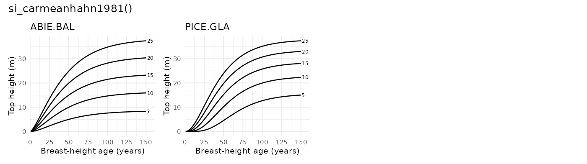
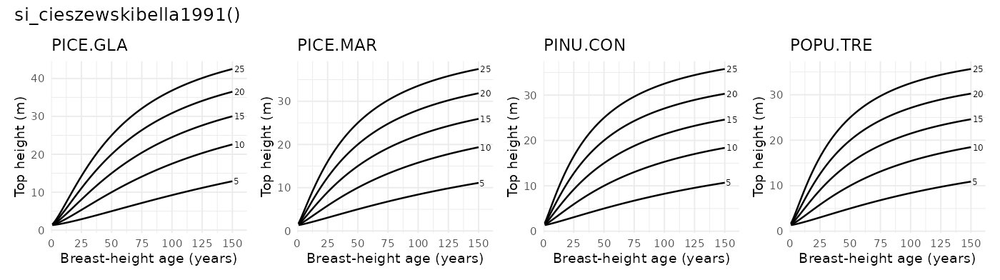
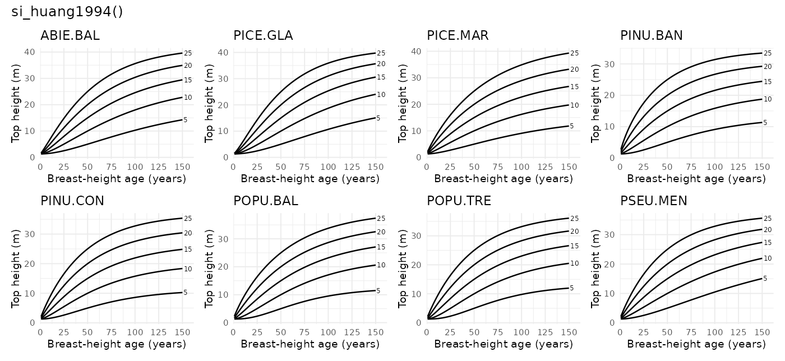
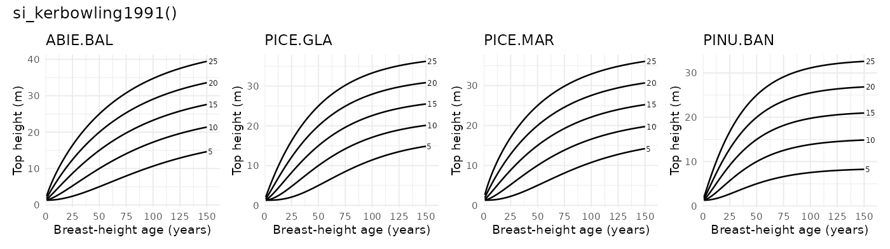
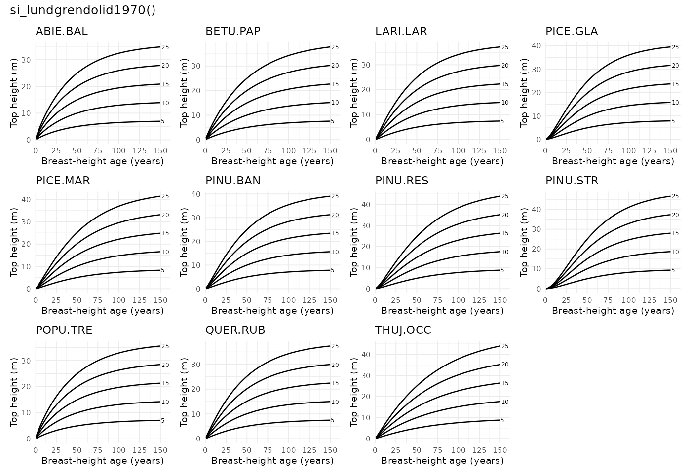
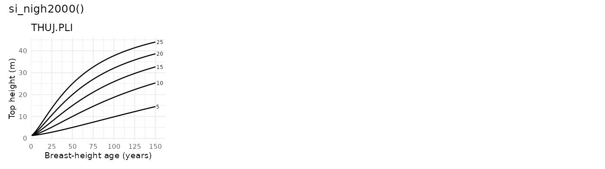
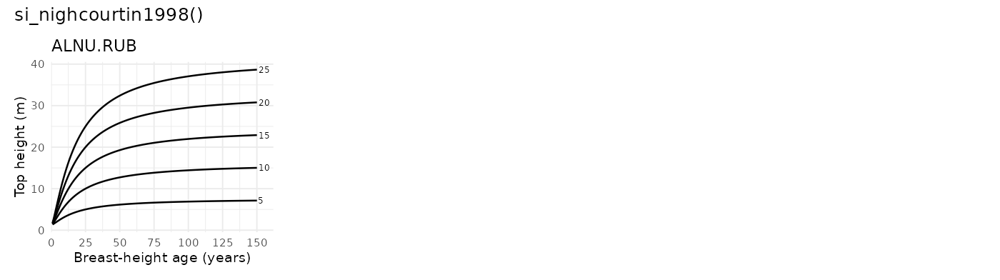
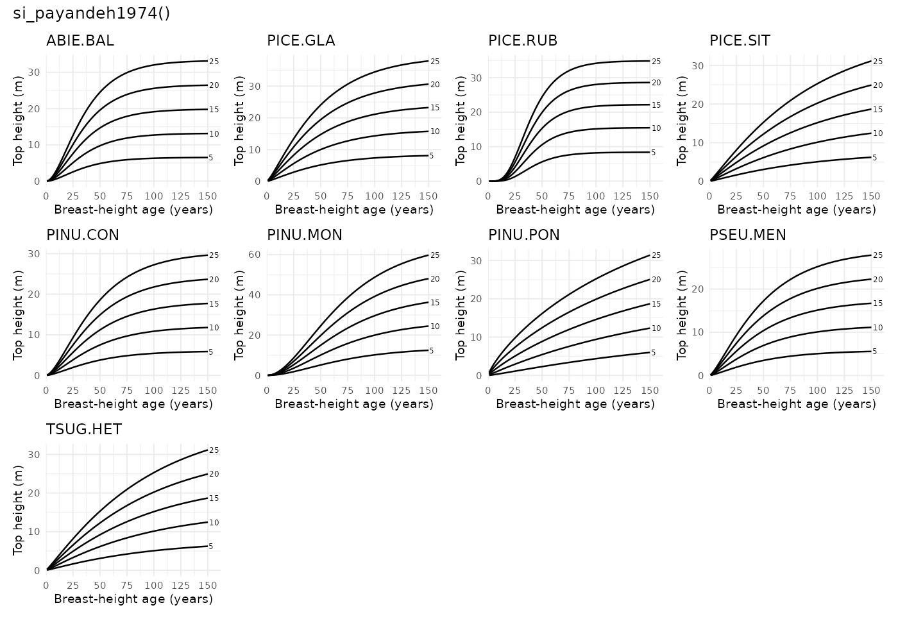
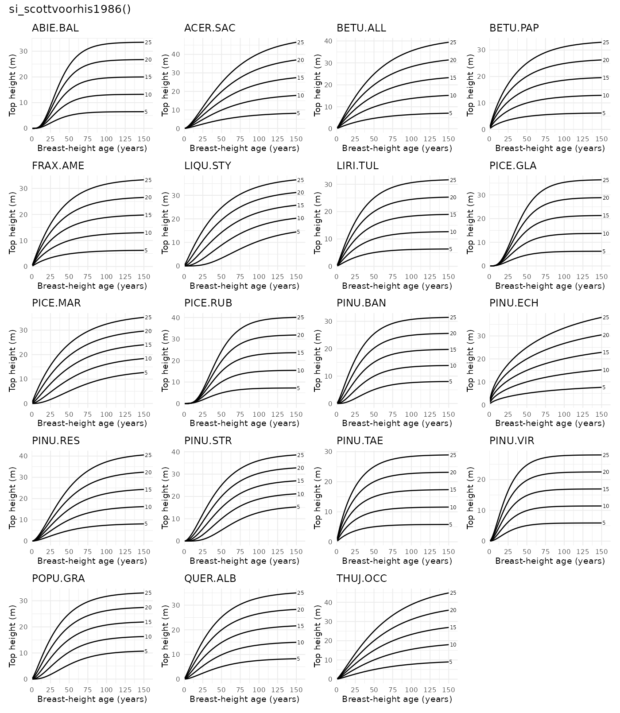
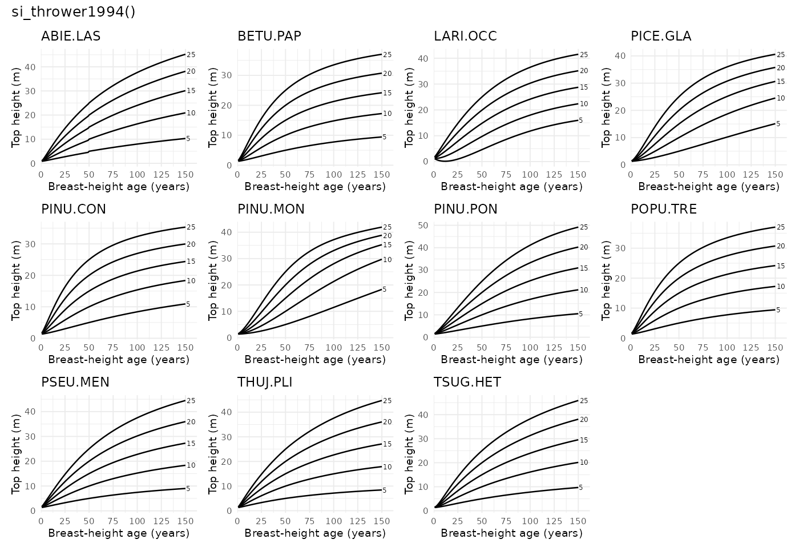

Site index models included in the package
si_carmeanhahn1981()
- Function reference:
si_carmeanhahn1981() - Description: Lake States site-index model for balsam fir and white spruce
- Coverage: ON
- Species coverage: 2 species (ABIE.BAL, PICE.GLA)
- Reference: Carmean and Hahn (1981)

si_cieszewskibella1991()
- Function reference:
si_cieszewskibella1991() - Description: Alberta polymorphic variable-age site-index model for four major tree species
- Coverage: AB
- Species coverage: 4 species (PICE.GLA, PICE.MAR, PINU.CON, POPU.TRE)
- Reference: Cieszewski and Bella (1991)

si_huang1994()
- Function reference:
si_huang1994() - Description: Huang et al. (1994) Alberta polymorphic site-index model set
- Coverage: AB
- Species coverage: 8 species (ABIE.BAL, PICE.GLA, PICE.MAR, PINU.BAN, PINU.CON, POPU.BAL, POPU.TRE, PSEU.MEN)
- Reference: Huang et al. (1994)

si_kerbowling1991()
- Function reference:
si_kerbowling1991() - Description: New Brunswick polymorphic site-index model for softwoods
- Coverage: NB
- Species coverage: 4 species (ABIE.BAL, PICE.GLA, PICE.MAR, PINU.BAN)
- Reference: Ker and Bowling (1991)

si_lundgrendolid1970()
- Function reference:
si_lundgrendolid1970() - Description: Lundgren and Dolid model (exponential monomolecular form); Lundgren and Dolid model (monomolecular form)
- Coverage: ON
- Species coverage: 11 species (ABIE.BAL, BETU.PAP, LARI.LAR, PICE.GLA, PICE.MAR, PINU.BAN, PINU.RES, PINU.STR, POPU.TRE, QUER.RUB, THUJ.OCC)
- Reference: Lundgren and Dolid (1970)

si_nigh2000()
- Function reference:
si_nigh2000() - Description: Nigh (2000) polymorphic site-index model for interior western redcedar
- Coverage: BC
- Species coverage: 1 species (THUJ.PLI)
- Reference: Nigh (2000)

si_nigh2000_gi()
- Function reference:
si_nigh2000_gi() - Description: Nigh (2000) growth-intercept site-index model for interior western redcedar
- Coverage: BC
- Species coverage: 1 species (THUJ.PLI)
- Reference: Nigh (2000)
No curve graphic shown for growth-intercept model.
si_nighcourtin1998()
- Function reference:
si_nighcourtin1998() - Description: Nigh and Courtin (1998) red alder model, SI25 scale; Nigh and Courtin (1998) red alder model, SI50 scale
- Coverage: BC
- Species coverage: 1 species (ALNU.RUB)
- Reference: Nigh and Courtin (1998)

si_payandeh1974()
- Function reference:
si_payandeh1974() - Description: Payandeh (1974) nonlinear site-index equations
- Coverage: Canada (all provinces/territories)
- Species coverage: 9 species (ABIE.BAL, PICE.GLA, PICE.RUB, PICE.SIT, PINU.CON, PINU.MON, PINU.PON, PSEU.MEN, TSUG.HET)
- Reference: Payandeh (1974)

si_scottvoorhis1986()
- Function reference:
si_scottvoorhis1986() - Description: Scott and Voorhis (1986) model with internal conversion to total age; Scott and Voorhis (1986) model using breast-height age directly
- Coverage: NB, NL, NS, ON, PE, QC
- Species coverage: 19 species (ABIE.BAL, ACER.SAC, BETU.ALL, BETU.PAP, FRAX.AME, LIQU.STY, LIRI.TUL, PICE.GLA, PICE.MAR, PICE.RUB, PINU.BAN, PINU.ECH, PINU.RES, PINU.STR, PINU.TAE, PINU.VIR, POPU.GRA, QUER.ALB, THUJ.OCC)
- Reference: Scott and Voorhis (1986)

si_thrower1994()
- Function reference:
si_thrower1994() - Description: Thrower et al. (1994) BC interior species model set
- Coverage: BC
- Species coverage: 11 species (ABIE.LAS, BETU.PAP, LARI.OCC, PICE.GLA, PINU.CON, PINU.MON, PINU.PON, POPU.TRE, PSEU.MEN, THUJ.PLI, TSUG.HET)
- Reference: Thrower et al. (1994)

References
Carmean, W.H., Hahn, J.T., 1981. Revised Site Index Curves for Balsam Fir and White Spruce in the Lake States. Research Note NC-269. St. Paul, MN: U.S. Dept. of Agriculture, Forest Service, North Central Forest Experiment Station 269. https://doi.org/10.2737/NC-RN-269
Cieszewski, C.J., Bella, I.E., 1991. Polymorphic height and site index curves for the major tree species in alberta (No. 51), Forest management note. Forestry Canada, Northwest Region, Northern Forestry Centre, Edmonton, Alberta.
Huang, S., Titus, S.J., Lakusta, T.W., 1994. Ecologically based site index curves and tables for major Alberta tree species. Tech. Report No. T307.
Ker, M.F., Bowling, C., 1991. Polymorphic site index equations for four New Brunswick softwood species. Canadian Journal of Forest Research 21, 728–732. https://doi.org/10.1139/x91-103
Lundgren, A.L., Dolid, W.A., 1970. Biological growth functions describe published site index curves for Lake States timber species. Research Paper NC-36. St. Paul, MN: U.S. Dept. of Agriculture, Forest Service, North Central Forest Experiment Station 36.
Nigh, G.D., 2000. Western redcedar site index models for the interior of British Columbia (No. Rep. 18). BC Ministry of Forests, Research Branch, Victoria, B.C.
Nigh, G.D., Courtin, P.J., 1998. Height models for Red Alder (Alnus rubra Bong.) in British Columbia. New Forests 16, 59–70. https://doi.org/10.1023/A:1006561502635
Payandeh, B., 1974. Nonlinear site index equations for several major Canadian timber species. The Forestry Chronicle 50, 194–196. https://doi.org/10.5558/tfc50194-5
Scott, C.T., Voorhis, N.G., 1986. Northeastern Forest Survey Site Index Equations and Site Productivity Classes. Northern Journal of Applied Forestry 3, 144–148. https://doi.org/10.1093/njaf/3.4.144
Thrower, J.S., Nussbaum, A.F., Di Lucca, C.M., 1994. Site index curves and tables for british columbia: Interior species (No. Field Guide Insert 6), Land management handbook. B.C. Ministry of Forests.